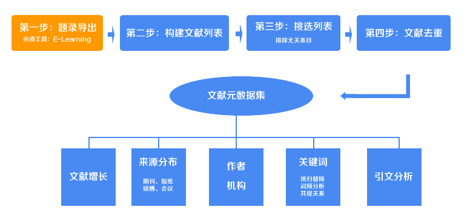
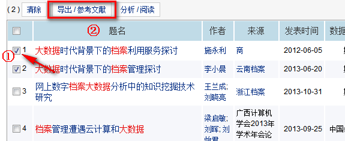
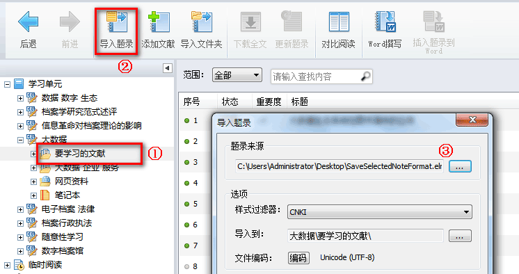
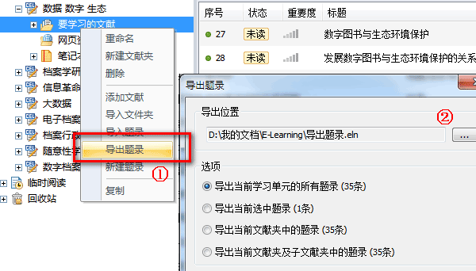

第一步：从CNKI中导出相关文献的题录列表

通过高级检索，检索出我们需要的文献，勾选文献前方的复选框，把文献加入到备处理缓存中，一次只能加入50条。
选择完之后点击上方的“导出 / 参考文献”。

在打开的页面中，勾选需要导出的文献。
选择完成之后点击上方的“导出 / 参考文献”。

接下来是导出.eln文件，选择左边的CNKI E-Learning格式。
点击右上方的“导出”按钮，下载并保存“SaveSelectedNoteFormat.eln”文件。

打开CNKI E-Learning软件（下载），创建学习单元，选择该单元下“要学习的文献”。
点击上方的“导入题录”按钮，选择刚才下载的.eln文件，导入即可。

完成上述操作之后，文献的所有元数据就被补全。在刚才导入的“要学习的文献”位置点击鼠标右键，选择“导出题录”。
选择“导出所有题录”，导出文件到任意位置。该.eln文件就是我们下一步处理需要的文件。

记住“导出题录.eln”这个文件的保存位置，想下一步中为我们将用到它。